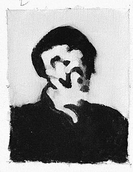

Keep Scrolling
Nestled in the heart of timeless elegance, Maison de l’Art is a sanctuary for those who cherish beauty in its purest form. More than just a gallery, it is a curated journey through centuries of artistic mastery — from delicate brushstrokes of classical portraiture to the serene whispers of nature immortalized on canvas.
Every piece within these walls is chosen not only for its visual splendor but for the stories it carries. The gilded frames, the gentle play of light, and the careful arrangement of each work invite visitors to slow down, breathe, and immerse themselves in an atmosphere of quiet luxury.
